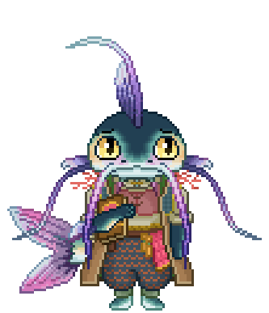
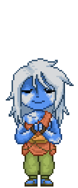
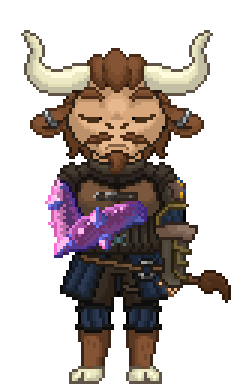

LoreRealm, a place where you can experience campaigns, games, and stories
Click to Roll
Path of the Gleaming Crystal — In an age of decay and ruin, your kingdom has crumbled. Galarion is no more, at least in most regions. Desperation breeds hope as the last remnants of the Glorious kingdom: Balaral flee aboard a great ship, setting sail toward uncharted waters and unclaimed lands. The promise of a new beginning, a fresh chance for survival, redemption, and a home drives many forward, away from the familiar ruins of Balaral's past greatness and toward the unknown. The objective is clear: establish a new civilization in a land full of mystery, wonder, and danger. This is a world where magic pulses in every tree, stone, and stream. The plants glow with ethereal light, strange creatures roam the untouched wilderness, crystals float about the skies and the soil hums with an ancient energy that no one truly understands. The expedition is not only one of survival and desperation but of discovery — uncovering new magics, unraveling the secrets of the land, and ultimately crafting a future from the ashes of the past.
Before the Clash between Realms, the Adamans and other gods waged a hidden war that lasted centuries. Mortals felt its effects in shifting seasons, rising heat, melting ice, and bitter cold cycles. The Ascended were taken first—drawn into a secret realm of fractured reflections of their past and future, a truth many could not endure. That realm was born from a single banished being of crystal origin, once mortal, whose power was confined but whose vision reached the overworld. Driven by revenge, they battled the gods of every realm, ultimately destroying them and resetting existence. Galarion was erased, and Balaral fell.
The Boat itself was a merchant ship commandeered by the remaining government on the North Galarion post; those inside the merchant ship were not already allowed on the boat. Mercenaries forced their way in and the incompetent captain of the merchant vessel didn't ever leave his quarters. Only a few are able to get on, including our heroes.


